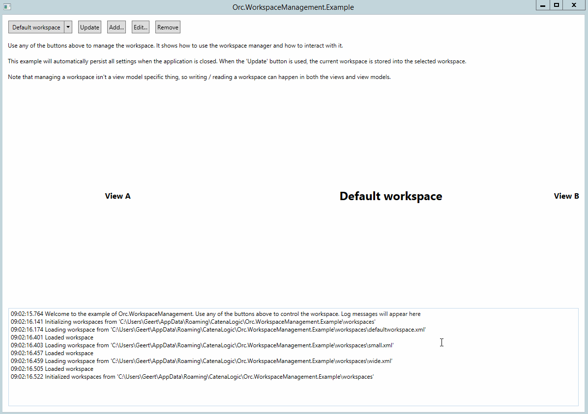

Find the source at https://github.com/WildGums/Orc.WorkspaceManagement.
| Chat |  |
| Downloads |  |
| Stable version |  |
| Unstable version |  |
Manage workspaces the easy way using this library.
Quick introduction
Workspaces are a combination of settings that a user can choose to configure an application. An example is the layout of all docking windows in Visual Studio. The advantage of the workspace management is that it takes away all the plumbing and you can concentrate on the actual usage of workspaces.
The workspace management library makes it easy to manage workspaces. The main component is the IWorkspaceManager that contains the current workspace and all available workspaces and allows to load or save workspaces.
Below is an overview of the most important components:
IWorkspace=> the actual workspace objectIWorkspaceManager=> the workspace manager with events and management methodsIWorkspaceInitializer=> allows customization of initial settings of a workspace

Warning
Important note
The base directory will be used as repository. This means that it cannot contain other files and all other files will be deleted from the directory
Creating a workspace initializer
When a workspace manager is created, it doesn't contain anything. The IWorkspaceInitializer interface allows the customization of that state.
By default the following initializers are available:
EmptyWorkspaceInitializer=> initializes nothing, this is the default
To create a custom workspace initializer, see the example below:
public class WorkspaceInitializer : IWorkspaceInitializer
{
public Task InitializeAsync(IWorkspace workspace)
{
workspace.SetValue("AView.Width", 200d);
workspace.SetValue("BView.Width", 200d);
return TaskHelper.Completed;
}
}
Next it can be registered in the ServiceLocator (so it will automatically be injected into the WorkspaceManager):
ServiceLocator.Default.RegisterType<IWorkspaceInitializer, MyWorkspaceInitializer>();
Make sure to register the service before instantiating the IWorkspaceManager because it will be injected
Initializing the workspace manager
Because the workspace manager is using async, the initialization is a separate method. This gives the developer the option to load the workspaces whenever it is required. To read the stored workspaces from disk, use the code below:
await workspaceManager.InitializeAsync();
Retrieving a list of all workspaces
var workspaces = workspaceManager.Workspaces;
Retrieving the current workspace
The library contains extension methods for the IWorkspaceManager to retrieve a typed instance:
var myWorkspace = workspaceManager.Workspace;
To customize the location where the workspaces are stored, use the BaseDirectory property.
Storing information in a workspace
Storing information in a workspace is the responsibility of every single component in the application. The IWorkspaceManager will raise the WorkspaceInfoRequested event so every component can put in the required information into the workspace.
To store information in a workspace, set the workspace to be updated as current workspace. Then let the user (or software) customize all components. Call the following method to raise the WorkspaceInfoRequested event to update the workspace:
await workspaceManager.StoreWorkspaceAsync();
Note that a workspace is only updated, not saved to disk by this method
Providers
Create a provider as shown in the example below:
public class RibbonWorkspaceProvider : IWorkspaceProvider
{
private readonly Ribbon _ribbon;
public RibbonWorkspaceProvider(Ribbon ribbon)
{
Argument.IsNotNull(() => ribbon);
_ribbon = ribbon;
}
public Task ProvideInformationAsync(IWorkspace workspace)
{
workspace.SetWorkspaceValue("Ribbon.IsMinimized", _ribbon.IsMinimized);
return TaskHelper.Completed;
}
public Task ApplyWorkspaceAsync(IWorkspace workspace)
{
_ribbon.IsMinimized = workspace.GetWorkspaceValue("Ribbon.IsMinimized", false);
return TaskHelper.Completed;
}
}
Then add it to the provider where the ribbon is available:
public RibbonView()
{
InitializeComponent();
var dependencyResolver = this.GetDependencyResolver();
var workspaceManager = dependencyResolver.Resolve<IWorkspaceManager>();
var ribbonWorkspaceProvider = new RibbonWorkspaceProvider(ribbon);
workspaceManager.AddProvider(ribbonWorkspaceProvider, true);
}
Events
Using events is a bit more work, but can accomplish the same:
public MyComponent(IWorkspaceManager workspaceManager)
{
workspaceManager.WorkspaceInfoRequested += OnWorkspaceInfoRequested;
}
private void OnWorkspaceInfoRequested(object sender, WorkspaceEventArgs e)
{
var workspace = e.Workspace;
workspace.SetWorkspaceValue("somekey", "somevalue");
}
Note that this will only be called when storing the workspace, restoring the workspace needs more events
Saving all workspaces to disk
To save all workspaces to disk, use the code below:
workspaceManager.Save();
Using the XAML behaviors
For the developers using XAML (WPF), behaviors and extension methods are available in the Orc.WorkspaceManagement.Xaml library.
Using the extension methods
Using the extension methods still requires manual work by subscribing to events of both the view and workspace manager, but allow more control.
Using the behaviors
The behavior is a wrapper around the extension methods and take away to need to manage anything. The behavior is aware of all the events and will handle everything accordingly. To use the behavior, use the code below:
<views:BView Grid.Row="2" Grid.Column="4">
<i:Interaction.Behaviors>
<behaviors:AutoWorkspace />
</i:Interaction.Behaviors>
</views:BView>